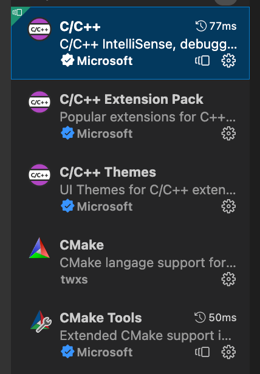

Objectives
Using Conan, CMake and Visual Studio Code, you will learn to set up a C++ environment on Windows, MacOS and Linux.
- How to install the C++ compiler on Windows, MacOS and Linux.
- How to install Python and all the required Python modules.
- How to install Conan, the C++ package manager.
- How to install Visual Studio Code.
- How to run our first application.
Introduction
There are several factors to consider when setting up the environment:
- It should be self-contained and reproducible
- It should be tool-friendly
A self-contained working environment makes collaboration with other people much more straightforward and makes setting up the CI/CD much quicker. Many companies opt to use docker for setting the working environment. I honestly think this is overkill. A working environment should require the bare minimum dependencies from the system and nothing more.
The environment should be able to build our project and simply the development process. Tools like auto competition, code navigation, code refactoring, code formatting, and static-analyser should be a must-have for our workflow. Setting up an IDE should be a high priority as it can affect our process. In this course, I will use Visual Studio Code as IDE. It's not my favourite, but it's free, cross-platform and customisable.
Terminal
I highly recommend installing winget on Windows as it will simplify download packages.
The terminal can be downloaded from the Windows App Store or installed via winget on Windows.
winget install --id Microsoft.WindowsTerminal --source winget
On MacOS, I suggest to install iTerm2.
I suggest to install also Homebrew as a package manager.
Nothing to do on Linux :) .
C++ Toolchain
The C++ Toolchain is the collection of tools that translates our source code to an executable that can run in the target machine.
There are many different compilers available today. MSVC, GCC, MinGW, Clang, and Intel are the most popular. These compilers are very different from each other, and learning singularly all of them takes a lot of time and effort. To our rescue, some build tools abstract the specific compiler and allow us to switch between them easily.
A particular note about Clang: clang is part of a more extensive framework called LLVM. LLVM provides many tools for formatting the code, static analysis, and compilers.
How to install the C++ toolchain
On Windows, the suggested compiler is bundled with Microsoft Visual Studio. It is possible to download Visual Studio Community for free.
There are two options to install it: via winget or downloading it from the browser. Using winget from the Windows Terminal:
winget install --id Microsoft.VisualStudio.2022.Community.Preview --source winget
Installing the C++ Compiler on MacOS is straightforward. Open the terminal and type:
xcode-select --install
On Linux, we will use the Clang toolchain instead of GCC. The reason is that Clang has better error messages than GCC, and it's easier for beginners to understand the issues.
Type the following command from the terminal:
sudo apt install clang
Python
Python is a programming language like C++, and Conan C++ Package Manager is a Python module. For this reason, Python should be installed in our system with these modules:
- pip: for installing Python packages
- pipenv: for using self-contained Python environment
- conan: the C++ Package Manager
How to install Python & modules
winget install --id Python.Python.3.12 --source winget
pip install pipenv
brew install python
pip install pipenv
sudo apt install pipenv
pip install pipenv
Installing conan
mkdir conan
cd conan
pipenv install conan
pipenv run conan detect
pipenv run conan --version
IDE
The IDE (integrated development editor) is an application combining tools to make coding easier. Usually, an IDE contains an editor where it is possible to write and edit the code and tools to run and debug the applications. Many available IDEs exist, but Visual Studio Code has become one of the most widespread. It's free and works on all the major platforms.
How to install Visual Studio Code
winget install --id Microsoft.VisualStudioCode.CLI --source Winget
brew install visual-studio-code
sudo snap install --classic code
Setting up Visual Studio Code
Visual Studio Code has to be available from the command line. After launching Visual Studio Code, press Alt+⇧+P or (⌘+⇧+P) and type “Shell Command: install 'code' command in PATH“

The next step is to install all the recommended C++ extensions. To install an extension, type Alt+⇧+X or ⌘+⇧+P and the extension's name. The following extensions are required:
- C/C++
- C/C++ Extension Pack
- C/C++ Themes (Optional)
- CMake
- CMake Tools
Below a screenshot with all the required extensions:
More information about how to set up a C++ environment can be found here.
Hello world
mkdir hello_world
cd hello_world
conan new cppyoga-simple-exe -d name=simple-app -d version=1.0.0
pipenv run conan detect
pipenv run conan install .
pipenv run conan build .
Activate the Conan build environment
pipenv shell
import std;
using namespace std;
int main() {
println("Hello Woorld!")
}